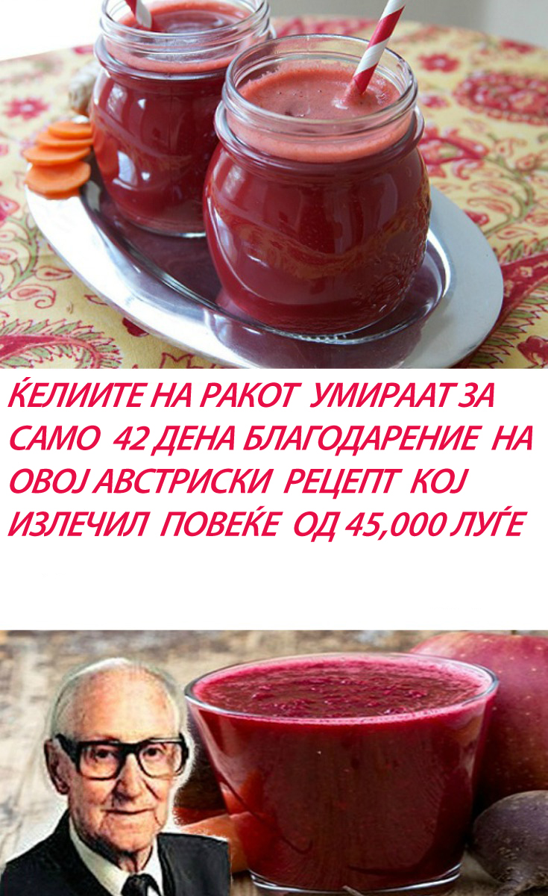

Рецептот е откриен од Рудолф Бројс од Австралија кој вели дека овој сок ги убива ќелиите на ракот за само 42 дена. Тој го направил овој сок кој дава одлични резултати за третман на канцерот. Овој рецепт излечил повеќе од 45.000 луѓе. Бројс вели дека ракот живее благодарение на протеините. Па, така тој јадел по специјална програма. Пиел само чај и од сокот кој го направил. После 42 дена кога отишол да се сними, ќелиите на ракот ги немало.
Состојки:
1 репка
1 морков
1 целер
1 компир
1 ротквица
Ставете ги овие состојки во блендерот и добро измешајте ги. Уживајте во напивката.
